1. 서론: 선박과 조선산업의 역사
선박은 인류의 역사와 함께 해왔다고 할 수 있을 정도로 오래된 역사를 가지고 있다. 선박의 발달은 추진 방식의 변화와 밀접한 관계에 있으며, 노를 젓는 사람의 힘에 의존하던 노선, 바람의 힘을 이용한 범선을 거쳐 기계의 힘을 이용하는 동력선 시대에 이르렀다. 동력선 시대의 선박 연료는 석탄, 석유를 거쳐 현재는 환경 규제 강화에 따라 저탄소 연료인 LNG의 적용이 확대되고 있으며, 보다 장기적으로는 탈탄소화를 위하여 화석연료가 아닌 전기추진, 암모니아, 수소 등의 무탄소 연료로 대체될 것으로 전망되고 있다.
[그림 1] 선박 추진 방식의 변화
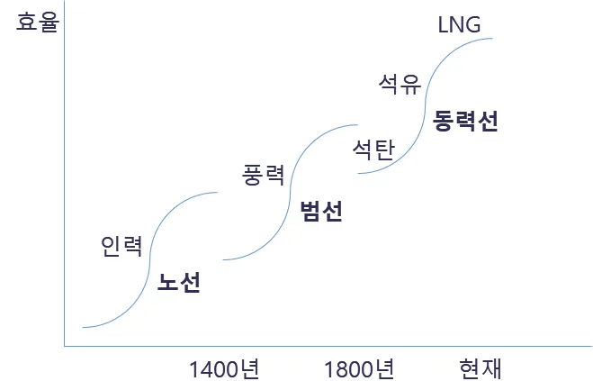
이러한 선박을 건조하는 조선산업은 전통적으로 영국을 중심으로 한 일부 유럽 국가가 주도해왔으며, 20세기 중반 주도권을 장악했던 일본에 이어 최근에 들어서는 한국과 중국 간의 경쟁이 심화되고 있는 추세에 있다.
[그림 2] 세계 조선산업 시장점유율 변동 추이
출처: Clarksons Research, 2020
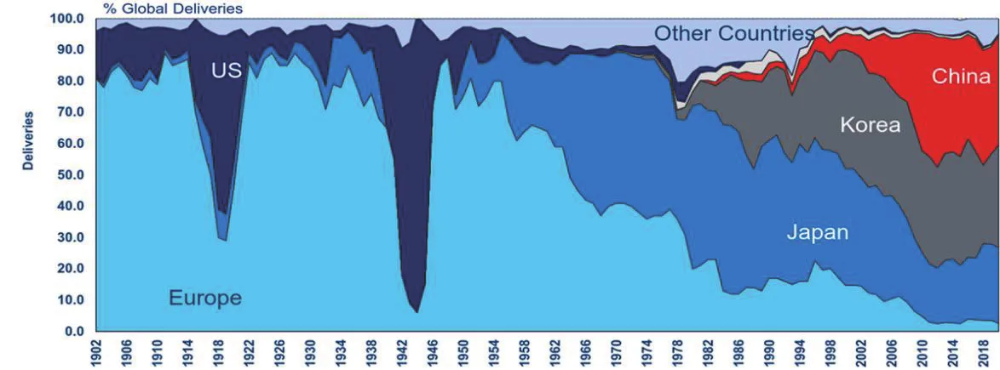
한국의 조선산업은 1967년 ‘조선공업진흥법’이 제정되며 산업 도약을 위한 기반이 조성되었으며, 1970년대 들어 현재 ‘조선 빅3’로 불리는 대우, 현대, 삼성 3개 조선사가 설립되며 획기적으로 발전하게 되었다. 이들 조선사는 초기에 도입했던 외국 기술을 국내 환경에 맞춰 체화하였으며, 이를 바탕으로 1990년대 중반 LNG 운반선, 대형 컨테이너선 등의 고부가가치 제품시장으로 본격 진출하여 2000년대에 들어서는 수주량뿐 아니라 설계/건조 기술에 있어서도 세계를 선도하고 있다.
[표 1] 한국 조선산업의 역사 – 기술발전단계1 구분
출처: 한국공학한림원 (2019), 한국산업기술발전사 - 운송장비 기반 재구성
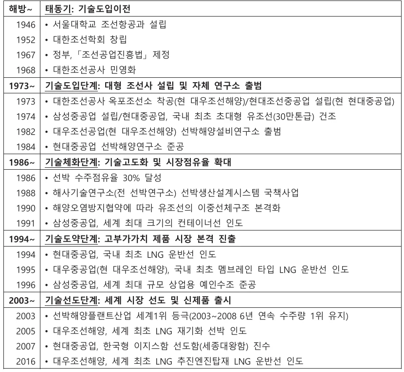
1 Jinjoo Lee 외 (1988)에서 제시된 기술혁신과정의 개발도상국 모형에 기반
2. 연구 배경 및 목적
2.1. 친환경 선박기술의 등장
2.1.1. 친환경 선박의 정의
친환경 선박은 지구환경과 해양환경 보전을 위한 국제협약을 만족하면서 기존 선박에 비하여 환경 위해 물질의 배출이 적으며 에너지 효율 및 운송 효율이 우수하고 쾌적한 선내 거주환경을 가지는 선박을 의미하며, 이를 위하여 친환경 선박에 요구되는 기능은 다음과 같다. (김상현 외, 2003)
- 국제해사기구(IMO, International Maritime Organization)의 규제 만족할 것
- 질소, 황산화물 및 이산화탄소 등의 대기오염 물질의 배출이 적을 것
- 친환경 추진 시스템을 가질 것
- 기존선에 비해 에너지 효율 및 운송 효율이 높을 것
- 선내에서 발생하는 각종 환경오염 물질을 친환경적으로 처리할 것
- 승무원의 거주 환경 및 근무 환경이 ISO 등의 규제를 만족할 것
친환경 선박의 구체적인 정의와 관련해서는 국가별, 기관별, 또는 연구 목적 등에 따라 다소간의 차이가 있으나, 본 연구에서는 현재 조선업계에서 일반적으로 사용되고 있는 국제해사기구의 정의에 따라 신조(New-build) 선박의 에너지효율 설계지수2(EEDI, Energy Efficiency Design Index)를 만족하는 선박을 친환경 선박이라 정의한다. 또한 이를 만족시키기 위해 선박에 적용되는 기술을 친환경 선박기술이라 하고, 이 중 상용화가 진행되어 실체화된 사례를 중심으로 살펴본다.
2 국제해사기구에서 규정하고 있는 탄소배출량 허용기준으로 자동차의 연비(l/km)와 유사한 개념.
2.1.2. 친환경 선박기술의 등장배경
지구온난화가 가속화됨에 따라 상승하는 지구의 평균기온을 억제하고 이상 기후변화에 따른 피해를 방지하기 위하여 화석연료에서 배출되는 이산화탄소를 줄이고 혁신적인 친환경 재생에너지의 개발과 더불어 고도의 에너지절약 사회를 만드는 것에 전 세계의 관심이 집중되고 있다.
이러한 추세에 발맞추어 국제 해운업계에서도 환경오염 및 온난화 방지를 위해 적극적으로 나서고 있으며, 특히 파리기후변화협약 이후 온실가스(GHG, Green House Gas) 감축을 위한 규제가 지속 강화되고 있는 추세이다.
현재 국제해사기구의 환경 규제에 포함된 선박 배출 온실가스는 이산화탄소, 황산화물(SOx), 질소산화물(NOx)로, 이 중 이산화탄소의 경우 단위질량당 지구 온난화에 미치는 영향의 정도는 크지 않으나 전체 온실가스 배출량 중 80%를 차지하고 있어 배출량 관리가 가장 중요한 온실가스로 분류되고 있다.
국제해사기구는 국제해상운송에서 발생하는 온실가스 배출을 저감하고 금세기 내에 이를 완전히 제거하는 것을 목표로 하고 있으며, 보다 구체적으로는 기준년도인 2008년 대비 신조선박의 이산화탄소 배출을 2015년부터 10%(EEDI Phase I), 2020년부터 20%(EEDI Phase II), 2025년부터 30%(EEDI Phase III)로 단계적 감축하여 2050년까지 50% 이상 감축을 달성한다는 목표를 설정하고 있다.
이러한 규제는 기존의 기술 및 선박의 운영 방식 등으로는 만족이 불가능한 수준으로, 규제 대응을 위해 친환경 선박기술을 포함하여 다양한 대응 방안에 대한 연구가 활발히 진행되고 있다.
[그림 3] 국제해사기구 선박 배출 온실가스 규제 동향3
출처: 김대헌 (2018), 한국형 친환경 선박 기술개발의 현황과 미래비전, 맥넷 전진대회(전략포럼)
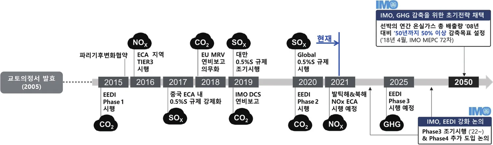
3 용어설명
- ECA(Emission Control Area): 강화된 선박 배출기준을 적용하는 배출규제해역
- MRV(Monitoring, Reporting, Verification): 선박 연료소모량 등을 모니터링하고 검증하는 제도
- DCS(Data Collection System): 등록선박에 대해 연료 소모량 등을 취합하여 보고하는 제도
- MEPC(Marine Environment Protection Committee): 국제해사기구 산하 해양환경보호위원회
2.1.3. 친환경 선박기술 현황
선박 배출 온실가스 중 황산화물과 질소산화물의 감축을 위한 기술은 이미 널리 적용되고 있는 상태이나, 이산화탄소의 경우 화석연료를 주연료로 사용하는 이상 감축에 한계가 있어 관련 연구가 가장 활발히 진행되고 있다.
이산화탄소 감축을 위한 방안은 크게 운영적 조치, 기술적 조치, 대체 연료 및 에너지 적용으로 구분하여 연구가 진행되고 있으며, 이 중 운영적 조치의 경우 주로 선박의 운영과 관련되는 것으로 해운선사 중심으로 연구가 진행되고 있다.
기술적 조치와 대체 연료/에너지 적용의 경우 신조 선박의 에너지효율설계지수 만족을 위해 선박에 적용되는 기술들로 앞서 정의한 친환경 선박기술에 해당하며, 조선소에서도 많은 연구를 진행하고 있는 분야이다. 이 중 일부 기술적 조치와 LNG, LPG 연료의 적용을 제외하면 아직까지 상용화와는 거리가 있는 상황이며, 상용화된 대표 기술로는 LNG 연료로 선박을 추진하는 기술을 꼽을 수 있다.
[표 2] 선박 배출 이산화탄소 감축 방안
출처: 주요 기관 연구결과를 바탕으로 재구성
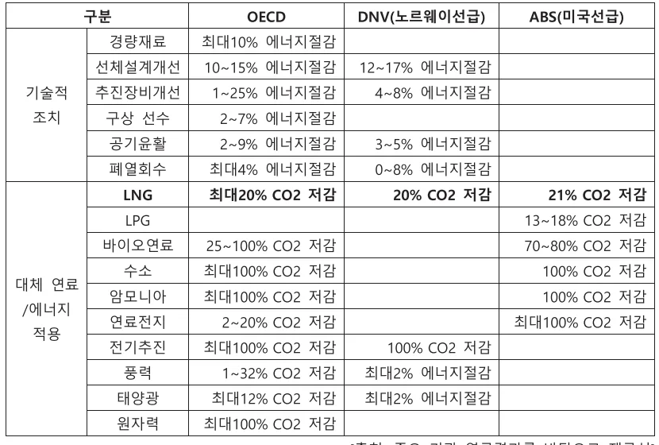
LNG의 경우 화석연료라는 한계는 있으나 기존의 선박 연료유 사용시 배출되는 온실가스 대비 황산화물 99%, 질소산화물 85%, 이산화탄소 20%가 적은 친환경 연료로 각광받고 있다. 이러한 이유로 비화석연료의 상용화 이전까지 가교기술(Bridge Technology)로서 선박 연료로의 적용이 지속 확대되고 있으며, 2022년에는 2018년 대비 사용량이 5배 가량 상승할 것으로 전망되고 있다.
[그림 4] 선박용 LNG 연료소비량 추이
출처: DNV, 2019
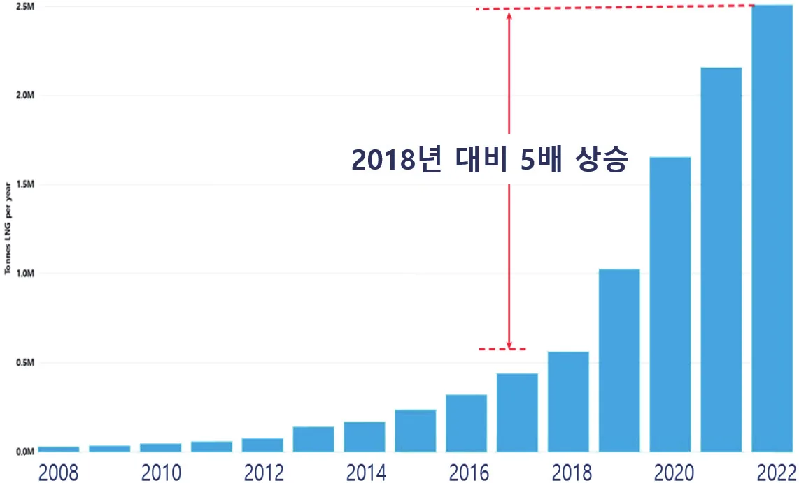
선박에서 LNG 연료의 적용은 LNG를 화물로 운반하는 LNG 운반선을 대상으로 먼저 적용되었다. 이런 이유로 현재 운항 중인 LNG 연료추진선은 대부분 LNG 운반선이지만, 아래의 건조 중 LNG 연료추진선의 선종 분포에서 나타나듯이 LNG 운반선 외 선종으로도 적용이 확대되고 있다. 또한, LNG 연료추진선 척수 대비 총톤수(GT, Gross Tonnage)의 비율이 큰 것으로 보았을 때 한국 대형 조선 3사인 대우조선해양, 현대중공업, 삼성중공업의 주력 제품인 대형 선박에서 LNG 연료의 적용이 활발하게 이루어지고 있음을 파악할 수 있다.
[그림 5] 운항 및 건조 중 LNG 연료추진선 현황
출처: Clarksons Research, 2020년 6월 기준
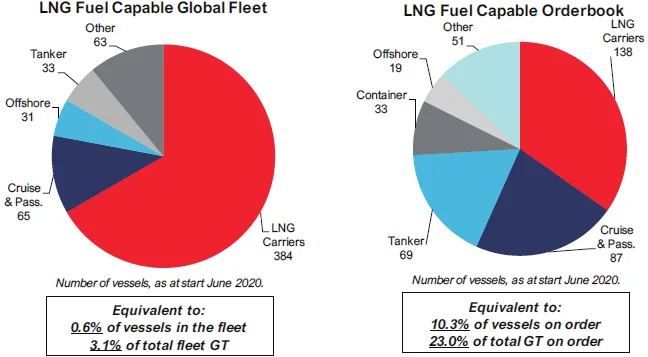
2.2. 연구 문제
앞서 살펴본 바와 같이 국제해사기구의 환경 규제 강화에 따라 친환경 선박기술의 개발이 활발히 진행되고 있으며, 특히 단기적으로는 LNG 연료의 적용이 확대되고 있다.
본 연구에서는 이러한 친환경 선박기술의 개발 및 도입 과정에서 선박의 제품 아키텍처 및 주요 시스템에는 어떠한 변화가 있었으며 조선업체에서는 어떠한 전략으로 이에 대응하였는지를 대우조선해양의 사례를 중심으로 분석해보고자 한다. 또한, 이를 바탕으로 기존 전략에 대한 보완점 및 향후 나아가야 할 방향성에 대해서도 함께 고찰해보고자 한다.
한편, 사례 분석 시의 대상 선종은 LNG 연료가 가장 먼저 적용된 대표적인 친환경 선박이자 대우조선해양의 주력 제품인 LNG 운반선을 대상으로 하였다.
2.3. 이론적 배경
본 연구에서는 아키텍처 이론을 바탕으로 해당 이론에서 다루어 지는 여러 측면에서 연구문제에 대한 분석을 진행할 예정이다.
제품 아키텍처론은 제품에 요구되는 기능을 제품의 각 구조(부품)에 어떻게 배분하고 부품간 인터페이스를 어떻게 디자인할 것인가에 관한 기본적인 설계사상으로, 일본의 대표적인 아키텍처 이론가인 후지모토 타카히로 교수는 제품 기능과 구성요소 간 대응 관계 및 부품 설계의 기업간 호환 가능 범위에 따른 아키텍처 기본 분류, 그리고 이를 자사 제품의 아키텍처와 고객 제품 아키텍처 간 관계로 확장시킨 심층 분류를 제시한 바 있다.
[그림 6] 아키텍처의 기본 및 심층 분류
출처: 후지모토 타카히로 (2007), 모노즈쿠리 경영학, 한일산업기술협력재단
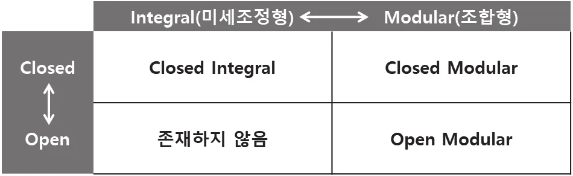
본 연구에서는 친환경 선박기술의 등장에 따른 선박의 제품 아키텍처 변화를 기본 분류, 심층 분류 관점에서 분석하고, 여기에 대응하는 대우조선해양 기술개발전략의 특징을 도출해보고자 한다.
3. 선박의 제품 아키텍처 변화
3.1. 아키텍처 기본 분류의 변화
선박은 기본적으로 기능과 구성요소 간 다대다(多對多) 대응 관계에 있는 Closed Integral 아키텍처의 성격을 가지는데, 이는 선박의 기능과 구성요소를 각각 분류하여 살펴보면 보다 명확하게 드러난다.
선박은 물에 뜰 수 있는 부양성, 여객 또는 화물을 실을 수 있는 적재성, 그리고 적재된 여객 또는 화물을 원하는 위치로 운반할 수 있는 이동성의 3요소를 동시에 갖춘 구조물로 정의되며, 이를 위해 요구되는 선박의 기본 기능은 통상 다음과 같이 7개로 분류할 수 있다.
- ① 부양: 여객 또는 화물을 싣고 물에 뜰 수 있는 기능
- ② 추진: 부양 상태에서 스스로 이동할 수 있는 기능
- ③ 강도: 여객, 화물 등의 내부 하중 및 외부 하중을 견디는 기능
- ④ 적재: 요구되는 양의 여객, 화물 등을 적재할 수 있는 기능
- ⑤ 복원: 기울거나 전복되지 않고 안정상태를 유지할 수 있는 기능
- ⑥ 운동: 파도 중 안정적으로 항해할 수 있는 기능
- ⑦ 조종: 원하는 진행방향으로 향할 수 있는 기능
한편, 선박의 구성요소는 조선업계에서 가장 널리 사용되는 분류체계인 SFI Group Code에 따라 아래와 같이 8개의 Main Group으로 분류할 수 있다.
[표 3] 선박의 구성요소 분류
출처: SFI(Skipsteknisk Forskningsinstitutt, 노르웨이 선박연구소)
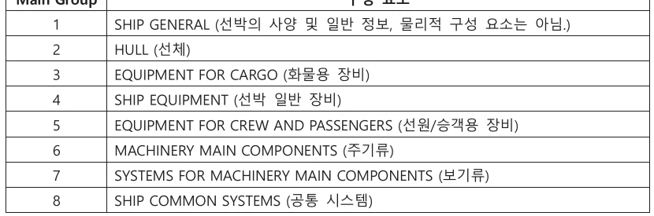
상기 선박 기능은 선박의 무게, 무게중심의 위치, 선체의 형상(선형), 속도 등과 관계가 있는데 이를 위해 선박의 구성요소들이 복합적으로 작용하여 기능할 수 있도록 한다. 또한 조선소는 선박의 구성요소들이 원활하게 기능할 수 있도록 구성요소 간 인터페이스를 조율해주어야 하는데 이 과정에서 각 조선소 간 차이가 발생하게 된다.
친환경 선박의 경우 선박의 기본 기능에 더하여 온실가스 배출저감을 위해 기존의 선박 연료유가 아닌 대체 연료의 적용, 그리고 에너지효율향상을 위한 기능이 추가로 요구된다. 이러한 추가 요구 기능 역시 구성요소 간 복합적 작용을 통한 구현이 필요하므로 전체적인 복잡도(Integrity)가 증가하여 Closed Integral 성격이 더욱 강해지게 된다.
[그림 7] 친환경 선박기술 등장에 따른 선박 아키텍처 기본 분류의 변화
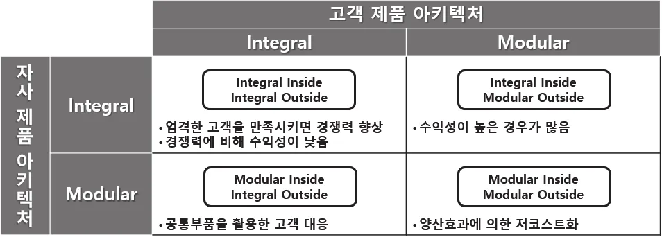
3.2. 아키텍처 심층 분류의 변화
고객사와의 관계 관점에서 보았을 때 선박은 양산품이 아닌, 고객의 요구 사항에 따라 맞춤형으로 제작하여 공급하는 Integral Outside의 구조를 가지고 있다. 친환경 선박기술이 적용되기 시작하면서 연료의 선택, 에너지효율증가를 위한 조치, 기타 배출가스 저감장치 설치 등 고객의 요구사항은 보다 다양해지게 되었고, 이로 인하여 조선소에서는 보다 많은 미세조정을 통하여 선박을 설계 및 건조할 필요가 있어 Integral Outside의 성격이 더욱 강화되고 있다.
[그림 8] 친환경 선박기술 등장에 따른 선박 아키텍처 심층 분류의 변화
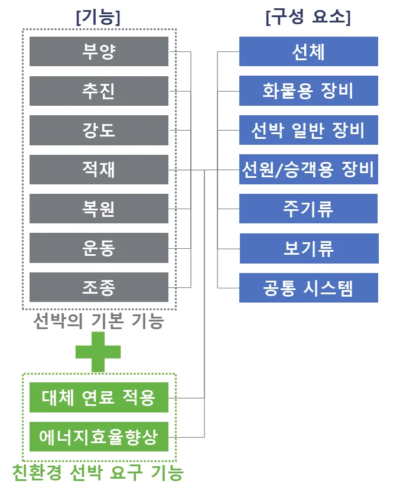
4. 대우조선해양 혁신 사례 연구
4.1. 친환경 LNG 운반선의 핵심 기술
LNG 운반선은 이름 그대로 천연가스를 액화시킨 액화천연가스(Liquified Natural Gas, LNG)를 화물로 운반하는 선박이다. 천연가스를 영하 163°C로 냉각하여 액화 시 부피가 약 600배 감소해 대량으로 운반할 수 있으며, 액화된 천연가스(LNG)는 영하 163°C의 극저온을 견딜 수 있게 선박에 제작/설치된 특수화물창에 보관된다. 이때 100% 단열은 불가하므로 자연기화로 인하여 LNG 증발가스가 발생하는데, 이를 그대로 두면 화물창 내부 압력이 지속적으로 상승하여 폭발할 수 있으므로 별도의 처리가 필요하다.
따라서 LNG 운반선에서는 화물창의 자연기화율을 최소화하고, 발생한 증발가스는 화물창으로 다시 주입하거나 연료로 활용하여 LNG 화물의 손실을 최소화하도록 하는 것이 핵심 기술이라 할 수 있는데, 이는 환경 규제 대응을 위한 LNG 연료의 적용에 있어서도 필수적으로 요구되는 것으로 친환경 선박 기술에 있어 LNG 운반선은 매우 중요한 위치에 있는 선종이라 할 수 있다.
이러한 LNG 운반선의 핵심 기술을 구현하기 위한 핵심 시스템은 다음과 같다.
[그림 9] LNG 운반선의 핵심 시스템
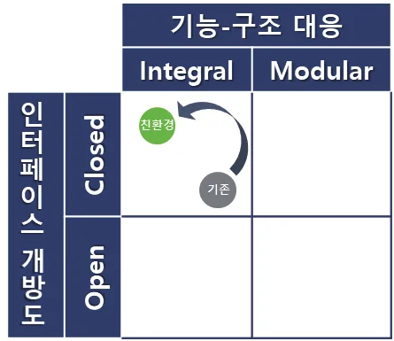
4 LNG 운반선에 적용되는 대표적 LNG 화물창에는 박스형의 멤브레인(Membrane) 타입과 구형(Spherical) 모스(Moss) 타입이 있는데, 멤브레인은 모스 대비 용적 효율이 높고 화물창이 갑판 하부에 위치하여 운항 시 시계 확보에 우수한 장점이 있음. 멤브레인 타입은 초기 시공 상의 고난이도 작업으로 적용에 어려움이 있었으나 지속적인 발전을 거듭하여 현재는 대부분의 대형 LNG 운반선에 적용되고 있음.
상기 핵심 시스템 중 LNG 화물창과 가스엔진은 해외 선도 업체가 장악하고 있는 분야로, LNG 화물창의 경우 프랑스 GTT가 사실상 시장을 독점하고 있으며, 가스엔진의 경우 독일 MAN ES가 2012년 최초로 제품을 출시하면서 LNG 운반선의 엔진이 기존의 디젤엔진에서 가스엔진으로 전환되는 큰 변화를 가져왔고 뒤이어 2015년 핀란드 Wartsila에서도 제품을 출시하고 점유율을 높여 나가 현재는 양사의 제품이 대형 선박용 가스엔진 시장을 양분하고 있는 상황이다.5
한편, LNG 연료공급시스템 및 재액화시스템은 선박용 LNG 연료 적용에 대한 움직임이 시작되는 과정에서 대우조선해양이 연구에 집중하여 자체 개발 및 상용화에 성공한 후 자사에서 건조하는 LNG 운반선에 적용중인6 시스템으로 이에 대하여 살펴보고자 한다.
5 2개 업체의 제품 외에는 대형 선박에 적용 가능한 가스엔진 없음.
6 기자재 판매사업은 영위하고 있지 않은 관계로 직접 건조하는 LNG 운반선에만 적용하고 있으며 외부로의 판매는 라이선스 계약 형태로만 실시하고 있음.
4.2. 대우조선해양의 LNG 기술개발 역사
대우조선해양은 1995년 국내 최초로 멤브레인 타입 화물창이 적용된 LNG 운반선을 인도하며 LNG 운반선의 첫 실적을 쌓은 바 있다.
당시에는 모스 타입 화물창이 대부분 적용되고 있었으나, LNG의 보급이 늘어나고 물동량이 증가함에 따라 LNG 운반선을 향후의 주력제품으로 계획하고 있던 대우조선해양은 시공 상의 어려움은 있지만 효율 측면에서 우수한 프랑스 GTT의 멤브레인 타입 화물창이 향후 시장을 장악할 것으로 전망하고 국내 조선소에서는 처음으로 이를 도입하였다.
이를 바탕으로 경쟁사인 현대중공업, 삼성중공업보다 한발 앞서 멤브레인 타입 화물창의 적용 실적을 쌓아 나가며 관련된 시공기술에 대한 연구를 진행하게 되었다.
LNG 분야에서의 선제적인 의사결정을 통한 기술개발은 이후에도 지속되어 꾸준히 기술을 축적하고 경쟁력을 유지할 수 있었으며, 환경규제강화로 인한 친환경 선박기술의 도입 시에도 빠른 전략수립 및 대응으로 이어질 수 있었다.
LNG를 선박 연료로 적용하기 위한 기술의 연구개발 움직임이 무르익지 않았던 2010년, 대우조선해양은 업계 최초로 LNG 연료공급시스템 개발을 완료하고 이듬해인 2011년, 당시 가스엔진을 개발 중에 있던 독일 MAN ES와 함께 주요 선주사와 선급을 대상으로 시연한 바 있다. 또한, 개발 시스템의 기술적 우수성을 바탕으로 가스엔진 공급사인 MAN ES를 포함한 세계 주요 시스템 제조업체를 대상으로 LNG 연료공급시스템에 대한 라이선스 공급 계약을 체결하기도 하였다.
여기에 이어 LNG 연료공급시스템과 압축기를 공유하는 방식의 새로운 개념의 LNG 재액화시스템을 개발하였고, 다양한 시장의 요구에 부합하는 더욱 진보된 재액화시스템(대용량화, 엔진별 최적화 등)을 연속적으로 개발하여 고압 및 저압 가스엔진에 모두 적용 가능한 라인업을 구축하게 되었다. 또한 이를 통해 기존 재액화시스템 대비 비약적인 에너지절감이 가능함을 입증하여 2014년에는 전세계에 발주된 LNG 운반선 중 약 절반인 37척을 수주하기도 하였다.
[표 4] 대우조선해양 기업 정보 및 LNG 운반선 누적 인도 실적
출처: Clarksons Research, 2021년 4월 기준
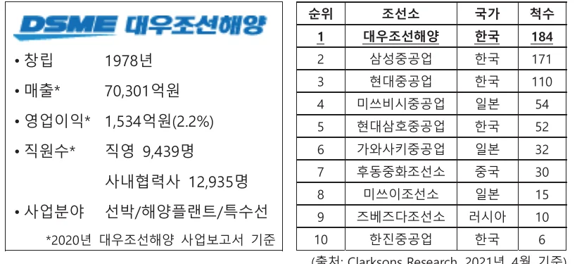
[표 5] 대우조선해양 LNG 기술개발 관련 주요 실적
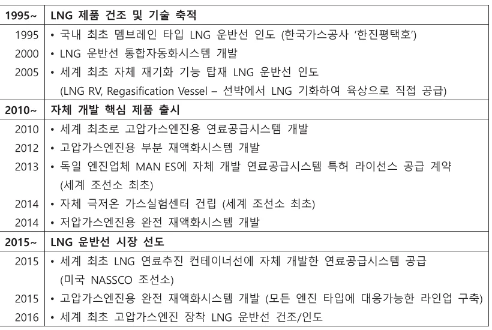
4.3. 기술개발전략 분석
4.3.1. 상황적 배경
2012년 LNG 연료로 추진이 가능한 세계 최초의 선박용 가스엔진이 출시되기 전 LNG 운반선 시장의 상황을 살펴보면, LNG 운반선의 핵심 기술 중 하나인 LNG 화물창의 경우 프랑스 GTT가 독점 공급을 하고 있어 화물창의 자연기화율에 있어서는 시장에서 경쟁 중이던 대우조선해양, 현대중공업, 삼성중공업 모두 상호 간 차별화를 두기는 어려운 상황이었다.
이때 대우조선해양은 LNG 연료의 적용이 꾸준히 확대될 것이라는 전망, 그리고 선박용 엔진의 선도 업체인 독일 MAN ES가 가스엔진의 개발 중에 있는 점을 고려하여 이와 연계한 시스템을 선제적으로 개발하는 전략을 수립하고 실행한다.
4.3.2. 핵심 기술 개발 사례 I: LNG 연료공급시스템
기존의 선박 연료유 사용 시 적용되던 연료공급시스템의 경우 범용 장비로 구성되며, 해당 장비들을 조선소에서 개별 구매하여 선박에 설치하였다. 그리고 표준화가 많이 진행되어 선박의 종류나 조선소에 관계없이 유사한 형태로 시스템이 구성되는 특징이 있었다.
LNG 연료공급시스템의 경우 엔진에서 필요로 하는 조건에 맞추어 연료를 공급하는 고유의 기능 측면에서는 기존과 동일하나 기술적 측면에서 큰 차이점이 있는데, 이는 기존에 엔진 내부에서 이루어지던 연료의 가압 공정이 엔진이 아닌 연료공급시스템에서 이루어진다는 점이다. 대우조선해양은 당시 고압가스엔진을 개발하고 있던 MAN ES에서 가압 공정의 엔진 내 구현에 어려움을 겪고 있다는 점에 착안, 엔진에 고압가스를 공급할 수 있는 별도의 시스템 개발에 집중하여 세계 최초로 개발하는데 성공하였고, 엔진과 연료공급시스템을 패키지 화하여 공급하고자 하던 MAN ES에 자체 개발한 연료공급시스템의 라이선스를 제공하는 계약을 체결하기도 하였다.
대우조선해양의 LNG 연료공급시스템은 가압 공정을 추가하는 과정에서 기존의 연료공급시스템 대비 내부 Integrity가 높아지는 특징을 발견할 수 있다. 이러한 Integral 파트의 핵심 장비는 극저온 고압펌프와 고압기화기로, 대우조선해양은 개발 중인 시스템에서 목표로 하는 기능을 구현하기 위하여 해당 장비에 대하여 우수한 역량을 보유하고 있던 해외 선도 업체들과 공동 연구를 진행하였다. 이를 바탕으로 해당 업체들은 요구성능을 만족시키는 장비 개발에 성공하여 대우조선해양에 공급하는 한편, 대우조선해양에서는 전체 시스템의 제어 기능을 구성하고 MAN ES와의 협력을 통해 가스엔진과의 연동을 조율하여 고압가스엔진용 LNG 연료공급 시스템을 개발하게 된다. 또한, 개발 완료 후에는 국산화 활동도 지속적으로 추진하여 핵심 장비/부품을 포함한 대부분의 구성품의 국산화에도 성공하였다.
4.3.3. 핵심 기술 개발 사례 II: LNG 재액화시스템
기존의 LNG 운반선에는 육상의 LNG 설비에서 사용되는 LNG 재액화시스템 중 소용량의 시스템을 일부 개조하여 적용하고 있었으며, 핀란드의 Wartsila, 프랑스의 Air Liquide 등의 해외 선도 업체에서 해당 시스템을 공급하고 있는 상황이었다.
당시의 재액화시스템은 선박에 최적화된 시스템이 아니었고 별도의 압축기를 포함하고 있어 비용과 공간 배치의 측면에서 다소 비효율적인 측면이 있었다. 이로 인하여 환경 규제가 본격화되기 이전까지는 비용이 많이 소요되는 재액화시스템을 설치하는 대신, 자연 기화된 증발가스를 연소시켜 폐기하는 방식으로 처리하기도 하였다.
대우조선해양은 가스엔진의 도입과 함께 개발하였던 LNG 연료공급시스템에 이미 고용량의 압축기능이 있다는 점에 착안하여 이를 활용하는 재액화시스템을 개발하게 된다. 즉, 가스엔진을 적용하는 LNG 운반선에는 LNG 연료공급시스템이 필요하고, LNG 연료공급시스템에는 이미 압축기가 포함되어 있으므로 이를 함께 사용할 수 있는 재액화시스템을 적용하는 것이다. 이와 동시에 육상 대비 움직임이 많은 해상 환경에 적합한 공정을 채택함으로써 시스템의 안정성 또한 향상시켰다.
이를 통하여 공정에 소모되는 전력을 대폭 감소시켜 비약적인 에너지 절감을 달성하였을 뿐만 아니라, 별도로 설치되던 압축기를 제거하는 효과로 비용과 공간 배치 측면에서의 효율도 대폭 증가되었다. 또한, 재액화 용량의 획기적인 증가도 가능하게 되어 LNG 화물창의 자연기화율을 낮추지 않고도 화물의 손실을 대폭 감소시킬 수 있게 되었다.7
7 연료비 절감 및 화물 보존에 따른 경제적 효과는 대형 LNG 운반선 1척당 연간 약 500만 달러. (출처: 대우조선해양 내부 검토 내용 기반 언론 보도에서 재인용 - 중앙일보 (2015.12.10), ‘대우조선, 세계 최초 천연가스 엔진 LNG선 완성’ (https://news.joins.com/article/19224120) 외 다수.)
4.3.4. 기술개발전략의 특징
상기와 같이 대우조선해양은 선박의 연료가 LNG로 대체되는 과정에서 자체 개발이 가능하고 시장의 수요를 불러일으킬 수 있는 핵심 기술분야를 선정하여 해당되는 시스템을 선제적으로 개발 및 통합 구성하였다. 즉, 제품의 복잡도(Integrity)가 증가되고 있는 시장에서 복합모듈화를 통한 대응으로 경쟁우위를 점하게 되었음을 볼 수 있었다.
[그림 10] 대우조선해양의 친환경 선박기술 개발전략
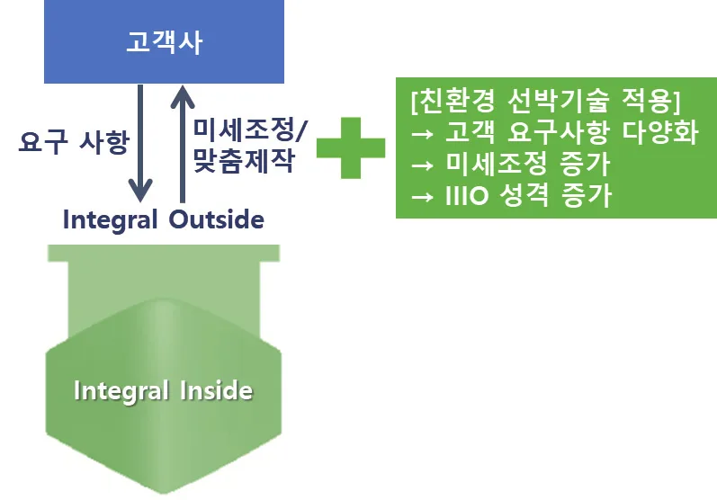
한편, 대우조선해양이 친환경 LNG 운반선의 핵심 기술인 연료공급시스템과 재액화시스템의 개발에 집중한 것은 경쟁사인 현대중공업, 삼성중공업과의 특허 출원 추이 비교 및 R&D 비용 추이를 통해서도 살펴볼 수 있다.
대우조선해양이 연료공급시스템의 개발에 착수한 2007년, 그리고 재액화시스템의 개발에 착수한 2012년부터 관련 특허의 출원이 증가하는 경향을 확인할 수 있으며, 해당 기간 R&D 비용 역시 지속 증가함을 볼 수 있다.
[그림 11] 한국 조선 3사 LNG 연료공급 및 재액화시스템 관련 특허 출원 추이
출처: KIPRIS 정보 기준 재가공
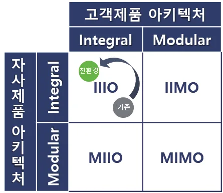
[그림 12] 대우조선해양 R&D 비용과 특허 출원 추이
출처(R&D 비용): 대우조선해양 사업보고서
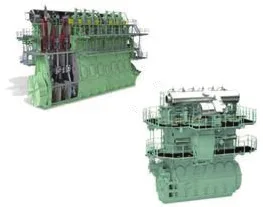
한편, 현대중공업과 삼성중공업도 대우조선해양에 이어 LNG 연료공급시스템 및 재액화시스템을 자체 개발하였으나 아직까지 실제 적용 실적은 미미한 상황으로, 자사의 신조 선박에 해외 선도 업체의 시스템이 주로 적용되고 있는 것으로 파악된다.
4.4. Integrity 증가에 대한 대응 노력
4.4.1. 세계 조선소 최초 자체 LNG 실험 설비의 구축
대우조선해양은 2014년 조선소로는 세계 최초로 자체 극저온 가스실험 센터를 구축하여, LNG 및 기타 극저온 가스와 관련된 시스템의 개발 시 시제품의 성능 및 내구성을 자체적으로 테스트할 수 있게 되었다.
기존에 외부에 의뢰하던 테스트를 조선소 내에서 수행할 수 있게 됨으로써 개발 일정을 보다 유연하게 가져갈 수 있고, 실제 선박 적용 시 발생할 수 있는 문제점을 사전에 인지하고 해결하는 것이 보다 용이 해졌다.
현재 본 설비를 활용하여 기 개발한 연료공급시스템과 재액화시스템의 지속적인 업그레이드도 진행 중에 있으며, 다양한 고객의 요구사항에 대한 대응 역량을 강화할 수 있게 되었다.
한편, 현대중공업의 경우 2017년, 삼성중공업은 2021년 각각 LNG 관련 시스템의 실증을 위한 설비를 구축한 바 있다.
[그림 13] 대우조선해양의 극저온 가스실험 센터
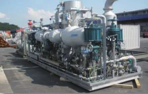
4.4.2. 고객 커뮤니케이션의 강화
친환경 선박기술의 도입으로 제품의 Integrity가 증가되면서 고객의 요구사항 또한 보다 다양해졌다. 이러한 상황에서 대우조선해양은 긴밀한 커뮤니케이션과 정보 교환을 통하여 고객의 요구사항을 빠르고 정확하게 파악하고, 미세조정을 효율적으로 수행하기 위하여 적극적인 고객 커뮤니케이션 활동을 실시하고 있다.
아래에 대표적인 예로 ‘Voice of Customer’와 ‘LNGC User Forum’에 대한 내용을 정리하여 소개하였다.
[Voice of Customer]
대우조선해양은 건조를 완료하고 고객사로 인도한 제품의 보증기간 내에서 6개월 단위로 Voice of Customer를 실시하여 고객사의 Feedback을 접수하고 있다.
Feedback을 요청하는 대상은 고객사 본사의 직원으로 한정하지 않고 실제 선박을 운용하는 선원들을 다수 포함하여, 현장에서 발생하는 문제점들도 직접적으로 파악될 수 있도록 하는 특징이 있다.8
또한, 지난 평가 대비 고객사 평가의 상승 및 하락 여부를 보고서에 포함하여 조치 사항에 대해 실제 고객이 느끼는 만족도를 가늠할 수 있도록 하고 있다.
8 통상 선원(현장의 Chief Engineer), 본사직원, 선장의 비율을 약 7:2:1로 하여 설문 대상 구성.
[그림 14] 대우조선해양의 Voice of Customer 보고서
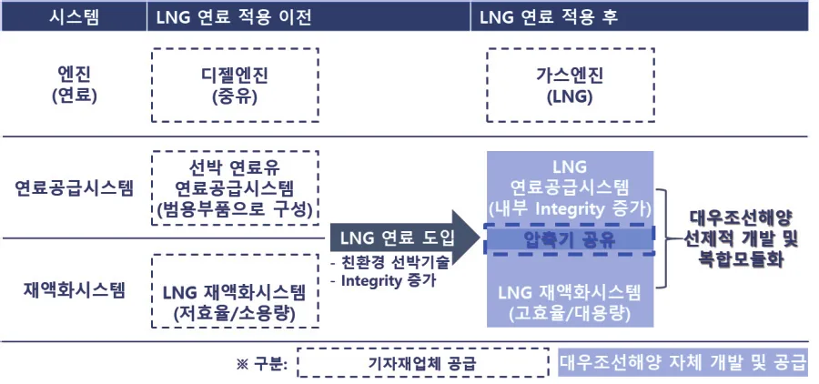
[LNGC9 User Forum]
대우조선해양은 2012년부터 LNG 제품의 고객사들과의 교류를 위한 포럼을 매년 또는 격년으로 개최하고 있다.
Voice of Customer가 현장의 Engineer 또는 실무진의 Feedback에 초점을 맞추었다면 LNGC User Forum은 고객사의 Senior Engineer 및 Top Management Level이 참석하여, 장기적인 방향성에 대해 상호 토론하고 대우조선해양 제품에 대한 Feedback을 제공받고 있다.
본 포럼은 세계 최대의 가스산업분야 박람회인 ‘GASTECH’ 기간 중 개최하여 최대한 많은 고객사 인사들이 참석할 수 있도록 하고 있으며, 대우조선해양의 신제품과 신기술을 소개함과 동시에 신규 수주의 기회로도 활용하고 있다.
9 LNG Carrier로 LNG 운반선을 뜻함.
[표 6] 대우조선해양 LNGC User Forum 개최 현황
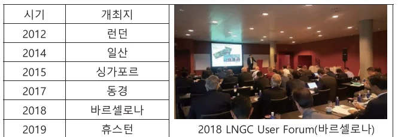
4.5. 주요 성과
앞서 설명한 핵심 기술의 개발 및 Integrity 증가에 대한 대응 노력 등을 바탕으로 대우조선해양은 LNG 운반선 시장에서 확고한 우위를 점하게 되었다.
연료공급시스템과 재액화시스템의 복합모듈화를 완료한 시점 이후부터 본격적으로 성과를 올리게 되면서 2014년에는 전세계에 발주된 LNG 운반선 중 약 절반에 해당하는 37척을 수주하기도 하였으며, 이후 대량 수주한 LNG 운반선들을 성공적으로 인도하여 2017년부터의 인도 실적에서는 경쟁사 대비 월등히 앞서 나갔음을 확인할 수 있다.10
10 LNG 운반선의 수주부터 인도까지는 통상 3년 정도가 소요됨.
[그림 15] 대우조선해양 LNG 운반선 인도 추이
출처: Clarksons Research 제공 Data Base 기준 본인 작성
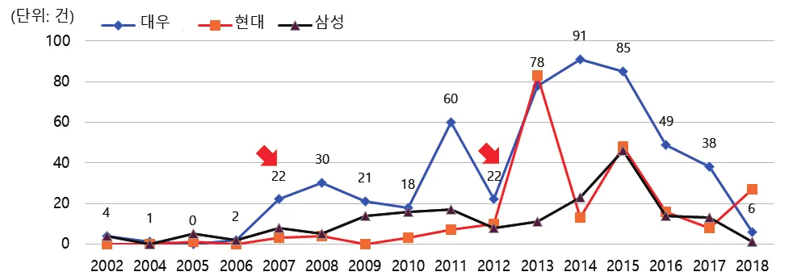
또한, 상기와 같은 사업적 성과 외에도 주요 기관의 권위있는 상들을 수상하며 LNG 기술에 있어 선도 기업의 이미지를 제고하기도 하였다.
[표 7] 대우조선해양 연료공급시스템 및 재액화시스템 주요 수상 내역
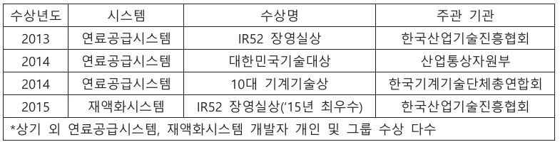
한편, 이러한 대우조선해양의 성과와 더불어 현대중공업과 삼성중공업까지 포함한 국내 조선 3사의 해외 조선사 대비 기술 우위가 지속되면서, 전세계 LNG 운반선 시장에서 한국은 경쟁국인 중국, 일본과의 현격한 격차를 지속적으로 유지하고 있다.
[그림 16] 국가별 LNG 운반선 인도 추이
출처: Clarksons Research 제공 Data Base 기준 본인 작성
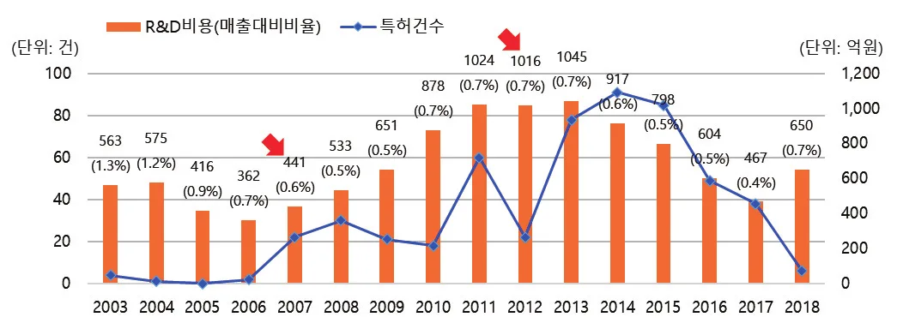
5. 결론 및 시사점
환경규제 대응을 위한 친환경 선박기술의 도입에 따라 선박에 요구되는 기능이 더욱 다양해지면서 제품의 Integrity가 증가됨을 볼 수 있었다.
이러한 상황에서 대우조선해양은 오랜 기간 축적한 LNG 운반선에 대한 경험과 노하우를 바탕으로 LNG 운반선의 핵심 기술인 동시에 친환경 선박기술의 핵심으로 떠오른 LNG 연료의 적용과 관련된 기술개발에 집중하였고, 세계 최초로 LNG 연료공급시스템을 개발한 후 이와 통합된 형태의 새로운 재액화시스템을 개발하는 복합모듈화 기술개발전략을 통하여 시장에서의 경쟁우위를 점하게 되었다.
뿐만 아니라, 증가하는 제품의 Integrity에 대응하기 위하여 조선소로는 세계 최초로 자체 LNG 실험 설비를 구축하여 개발한 시스템을 직접 실증함으로써 다양한 고객의 요구사항에 대한 대응 역량을 강화할 수 있었으며, 고객과의 긴밀한 커뮤니케이션과 정보 교환을 위해 Voice of Customer와 LNGC User Forum 등의 활동을 실시하여 고객의 요구사항을 빠르고 정확하게 파악하고 미세조정을 효율적으로 수행할 수 있도록 하였다.
상기와 같은 기술개발전략 및 다양한 노력을 바탕으로 대우조선해양은 전세계 LNG 운반선 시장에서 압도적인 성공을 거둘 수 있었다.
또한, 보다 의미 있는 부분은 핵심 기술의 자립화에 성공하며 핵심 시스템에 대해서도 해외 선도 업체들과 경쟁하고 타 조선소 등으로 판매할 수 있는 기반을 구축했다는 점이다.
한국의 조선산업이 세계 정상을 차지한 지는 오래되었으나, 지금까지는 그 범위가 선박 완성품의 설계 및 건조에 한정되어 있었고 핵심 기자재는 해외의 주요 선도 업체에 의존하는 한계가 있었다.
하지만 대우조선해양이 친환경 선박기술의 도입 과정에서 LNG 운반선 핵심 시스템의 자체 개발 및 다수의 적용 실적을 쌓는데 성공함으로써, 기존의 선박 완제품 공급자 역할에서 범위를 확장하여 핵심 시스템의 공급자 역할까지 가능하게 된 것이다.
[그림 17] 대우조선해양의 LNG 운반선 핵심 기술 자체 개발의 의의
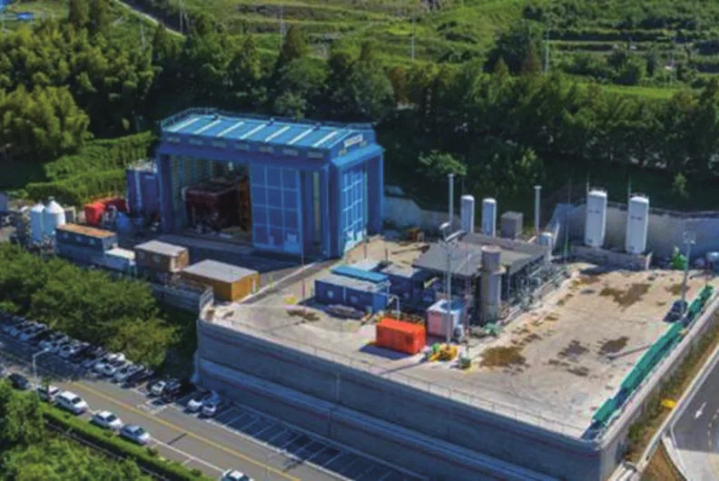
다만, 상기와 같이 핵심 기술의 자체 개발을 통해 시스템 공급자 역할을 할 수 있는 기반은 마련하였으나 현재까지는 해당 시스템의 공급 범위가 자사 건조 선박 또는 라이선스 형태로의 외부 제공에 국한되고 있다.
이는 선박의 신조 외 사업영역으로의 확장에 소극적인 회사 정책으로 인한 것으로, 향후에는 자체 개발 시스템에 대한 시장 확대 차원에서 타사 건조 선박 및 개조(Retrofit) 선박에 이르기까지 그 적용 범위를 확대하는 것에 대한 검토가 필요할 것이다.
특히, 해상환경규제의 적용 범위가 신조 선박 뿐만 아니라 기존에 운항 중인 선박까지 확대됨에 따라 선박의 개조 시장이 지속 성장할 것으로 전망되는 만큼 개조 선박으로의 적용은 더욱 중요하게 고려해야 할 부분이라 할 수 있다.
이를 위해서는 전담 조직 등을 구성하여 시스템 단위 제품을 외부로 판매하기 위한 기능을 회사 내에 마련함과 동시에, 현재 자사 건조 선박으로의 적용에 집중된 핵심 시스템의 Integral Inside – Integral Outside 제품 아키텍처를 Integral Inside – Modular Outside로 발전시키기 위한 노력이 필요할 것이다.
Reference
[1] Jinjoo Lee, Zong-tae Bae, Dong-kyu Choi (1988), Technology Development Processes: A Model for Developing Country with Global Perspective.
[2] 한국공학한림원 (2019), 한국 산업기술 발전사 – 운송장비.
[3] 김효철 외 (2006), 한국의 배, 지성사.
[4] 김상현, 고창두 (2003), 친환경 선박의 개념과 개발 동향, 대한조선학회, 대한조선학회지 제40권 제2호, 75-84쪽.
[5] 박한선, 이호춘, 이혜진, 김보람 (2016), 우리나라 선박의 친환경기술 적용 확대방안, 한국해양수산개발원연구보고서.
[6] 김대헌 (2018), 한국형 친환경 선박 기술개발의 현황과 미래비전, 맥넷 전진대회(전략포럼).
[7] 후지모토 타카히로 (2007), 모노즈쿠리 경영학, 한일산업기술협력재단.
[8] 임영섭 (2020), 친환경 선박 잡학지식, 지성사.
[9] 한미경 (2006), 자동차산업의 제품 아키텍처와 제품개발 패턴, 한국전략경영학회, 전략경영연구 제9권 제1호, 77-99쪽.
[10] 백서인, 이성민, 이덕희 (2015), 한·중 조선 산업의 제품 아키텍처와 조직역량에 관한 연구, 기술경영경제학회, 기술혁신연구 26권 2호, 69-93쪽.